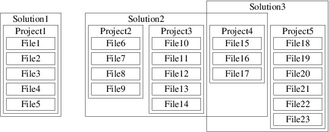
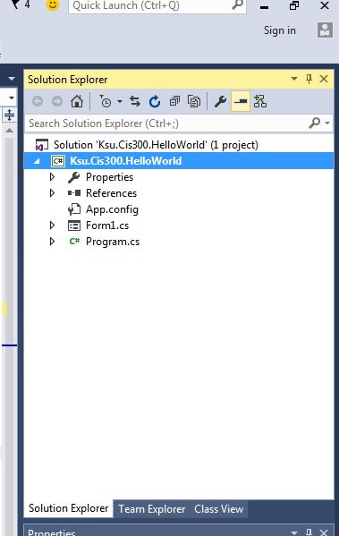
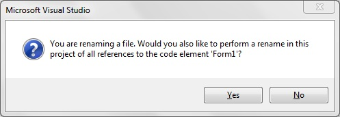

Note that in the above figure, Project4 is contained in both Solution2 and Solution3. In this section, we will focus on solutions that contain exactly one project, which in turn belongs to no other solutions (e.g., Solution1 in the above figure).When you clone a Git repository using Visual Studio 2017 (see the previous section), the Visual Studio Solution Explorer may display the contents of the repository. In CIS 300, each repository will contain exactly one solution, whose name will have the suffix, ".sln". To open this solution, double-click on it.
If Visual Studio doesn't show the contents of the repository in the Solution Explorer, you can open the solution as follows. First, double-click the repository name (i.e., the name of the folder containing it) in the Team Explorer. The Team Explorer will then list the solutions contained in that repository - again, in CIS 300, there will only be one. Double-click that solution to open it.
The Solution Explorer will now give you a view of the structure of your solution (you can always open the Solution Explorer from the View menu if you don't see it). For example, opening the solution in the repository given in the previous section will result in the following being shown in the Solution Explorer:
Near the top, just under the search box, is the name of the solution with an indication of how many projects it contains. Listed under the name of the solution is each project, together with the various components of the project. One of the projects is always shown in bold face. The bold face indicates that this project is the startup project; i.e., it is the project that the debugger will attempt to execute whenever it is invoked (for more details, see the section, "The Debugger").
The solution in the above example is the initial solution created when a new Windows Forms Application is opened. The project components having a suffix of ".cs" are C# source code files. When a new Windows Forms Application is created, its project will contain the following three source code files:
using System;
using System.Collections.Generic;
using System.Linq;
using System.Threading.Tasks;
using System.Windows.Forms;
namespace Ksu.Cis300.HelloWorld
{
static class Program
{
/// <summary>
/// The main entry point for the application.
/// </summary>
[STAThread]
static void Main()
{
Application.EnableVisualStyles();
Application.SetCompatibleTextRenderingDefault(false);
Application.Run(new Form1());
}
}
}
The Main method is where the application code begins. The last
line of this method constructs a new instance of the class
that implements the GUI. The call to Application.Run
displays the GUI and starts a loop that processes events such
as mouse clicks and keystrokes. Ordinarily, there is no need
to look at this code. 
You should click the "Yes" button in order to make the renaming consistent - particularly to rename the class as well.Visual Studio is either a registered trademark or a trademark of Microsoft Corporation in the United States and/or other countries.
Last modified: Fri Jul 28 06:45:14 CDT 2017
© Copyright 2014, 2015, 2017, Rod Howell. All rights reserved.|
|
|
|